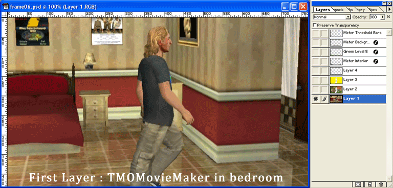
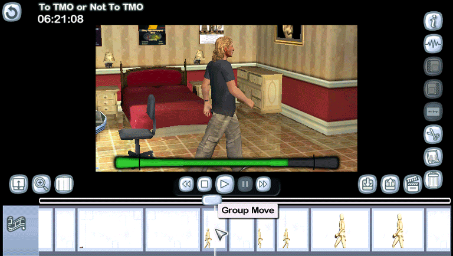

|
| Home | The Movie | Cast & Crew | Soundtrack | How-To Guide | Screenshots | Riley Entertainment |
Transitions
When TMOMovieMaker travels between the "real world" and the "virtual casting office" (a visual metaphor for the TMO forums), I felt I needed to have some sort of unique transition effect. There were a number of ways this could be done, all of which involved overlays. I wanted the animation to be as smooth as possible, so I went with a technique that used as much actual film footage as possible.
In the end, what I had were three game scenes for each of the two transitions. The first transition used the "Group Move" scene on my "Empty Space" set. In the Post Production screen, this looked like: Group Move -> scene with full-screen animated overlay -> Group Move. So, I filmed the Group Move scene with the bedroom as set dressing. Then, I copied that scene and redressed the second shot with the casting office, sidewalks, and other ornaments. The camera angle remained the same on both shots.
I then had to decide exactly what type of visual effect I wanted. I could have used a Crossfade transition in VideoStudio, but ultimately decided that was too simplistic. I wanted to have a white outline appear around TMOMovieMaker - and that would only be possible in Photoshop.
This required me to film two additional scenes: copies of the two Group Move scenes explained earlier, but with TMOMovieMaker removed. I exported all four shots in "Highest" quality. I then took each corresponding frame from each shot into Photoshop, and did the following:

Frame #6 of the first transition effect in Photoshop. Watch the animation for details!

Post Production screen of the three shots that make up the complete transition.